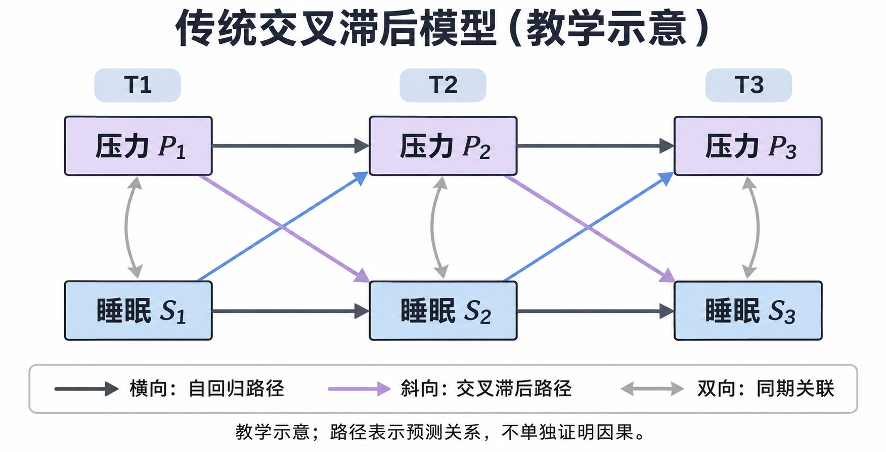
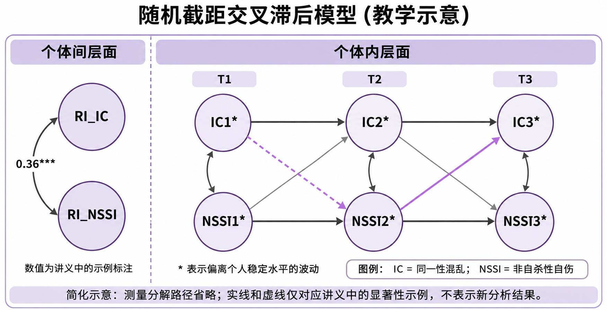
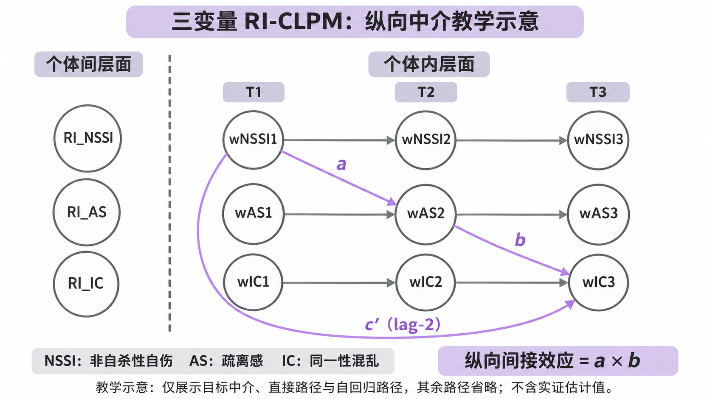

第 0 讲：从一个问题开始
假设现在你想研究这样一个问题：为什么有些学生在压力变大之后，情绪会逐渐变差，睡眠也越来越不好？
直觉上，我们很容易给出一个因果假设：压力导致了抑郁，抑郁又影响了睡眠。
为了验证这个假设，你可能找了 500 名学生，在期末考试前给他们发了问卷，同时测量了这三个变量。结果发现，它们之间确实存在显著的正相关：压力得分高的学生，抑郁得分也高，睡眠质量也更差。
看到这些显著相关时，我们很容易兴奋起来，觉得理论似乎得到了支持。可只要冷静一点，就会发现事情远没有结束。
这真的能证明你的假设吗？当你撰写好论文发表，审稿人至少会提出三个质疑：
-
因果方向难以确认： 究竟是近期的压力导致了失眠，还是昨晚的失眠导致今天感觉压力更大？在同一时间点收集的数据无法区分这一点。
-
缺乏动态变化过程： 你的假设是一个“逐渐变差”的过程，但单次问卷只提供了一个静态的数据片段，看不到事物随时间发展的先后顺序。
-
个体稳定性差异的干扰： 这 500 个学生中，有些人可能本身就具有高焦虑、易失眠的特质。你测量到的高分，可能仅仅反映了他们长期稳定的性格，而不是近期压力引发的动态变化。
为了严谨地回答这三个问题，传统的统计方法显然是不够的。我们需要一种更精密的量化工具。
不过，在掌握复杂模型之前，我们必须先一步步解决上述的疑问。首当其冲的问题是：既然单次测量看不到变化过程，我们该怎么做？
第 1 讲：纵向研究
上一讲提到，我们只在同一个时间点收集一次数据。这种做法被称为横断研究。它的主要局限在于：数据中所有的变量都处于同一截面，你无法理清谁发生在前、谁发生在后。它只能说明变量之间存在关联，但对“变化过程”无能为力。
为了观察变量如何随时间变化，我们需要引入时间维度，也就是进行纵向研究。
纵向研究的基本逻辑是：时间是单向的，如果变量 A（压力） 会导致变量 B（失眠） 的变化，那么前一个时间点的 A 应该能预测后一个时间点的 B（压力就能预测失眠）。
回到刚刚的研究，为了捕捉动态过程，我们需要设计一个包含三次测量的纵向研究：
-
T1（时间点 1）： 学期初，测量这 500 名学生的压力、抑郁和睡眠。
-
T2（时间点 2）： 期中考试后，再次找到这 500 名学生，进行第二次测量。
-
T3（时间点 3）： 期末考试前，再次找到这 500 名学生，第三次测量。
注意，在这里我们必须追踪同一个体。纵向研究的基础是“个体内比较”。我们要观察的，是 1 号学生在 T1 阶段的压力水平，是否预测了他自己在 T2 阶段的情绪变化。
现在，我们有了明确的时间轴，似乎已经可以回答“压力如何随时间影响睡眠”这个问题了。
但是，一个新的问题出现了：
如果我们在连续三次的测量中，都发现某个学生的压力得分很高，失眠得分也很高，我们能得出“压力大导致失眠”的纵向结论吗？
第2讲 个体间差异与个体内变化
严谨的回答是：不能。因为在纵向数据中，这种现象存在两种截然不同的解释。
让我们通过三个虚构学生的压力与睡眠数据，直观对比这两种来源的差异。
| 学生 | T1 压力 | T1 睡眠 | T2 压力 | T2 睡眠 | T3 压力 | T3 睡眠 |
|---|---|---|---|---|---|---|
| 甲 | 高 | 差 | 高 | 差 | 高 | 差 |
| 乙 | 低 | 好 | 低 | 好 | 低 | 好 |
| 丙 | 中 | 中 | 高 | 差 | 中 | 中 |
- 来源一：个体间差异 (Between-person differences)
观察学生甲和乙。甲在三个时间点的压力都很高，睡眠也一直很差；乙的情况则完全相反。
这种情况反映了一种长期的个人特质。它说明人与人之间天生存在相对稳定的差异。有些人长期处于较高的压力基线，且睡眠质量长期不佳。
- 来源二：个体内变化 (Within-person changes)
观察学生丙。丙平时的压力和睡眠水平处于中等。但在 T2 阶段，他的压力突然升高，随后的睡眠质量随之下降。到了 T3，各项指标又恢复了平时的水平。
这种情况反映了一个真实的动态过程。在这里，我们比较的基准发生了转移：我们要衡量的是丙“当前状态偏离了他自己平时状态的程度”。
在纵向数据分析中，这对应两种统计学维度：
-
个体间差异（Between-person differences）： 它关注的是“人与人之间的比较”。比如，总体而言，平均压力水平更高的学生，是否也是平均失眠水平更高的学生？它反映的是个体身上不随时间变化的稳定特质。
-
个体内变化（Within-person changes）： 它关注的是“自己跟自己的比较”。比如，当某个学生在特定的时间点，其压力水平高于他自己的平均基线时，这种“状态的波动”是否会预测他在下一个时间点出现异常的失眠？
现在，重新回到我们的研究问题：我们要探讨的是“压力如何随着时间影响人的睡眠”，这本质上是一个个体内变化的问题。这意味着我们必须想办法把“稳定特质”这一层彻底剥离，只用纯粹的“状态波动”去验证。
那么，什么样的模型可以用于分析处理这种问题呢？
第3讲 传统交叉滞后模型 Cross-Lagged Panel Model,CLPM
现在，你手里已经握着 500 个学生在 T1、T2、T3 三个时间点的压力和睡眠数据。
在过去很长一段时间里，研究者的首选工具是传统的交叉滞后模型 (Cross-Lagged Panel Model, CLPM)。
为了理解它的逻辑，我们先来它的核心架构。CLPM 主要由两类路径组成：
- “自己预测未来的自己”：自回归路径 (Autoregressive paths)
想象一下，如果你在 T2 发现小明的睡眠极差，你能不能直接下结论说：“看，这肯定是他 T1压力大造成的！”
当然不能。因为有一个最简单的反驳：小明可能在 T1 的时候睡眠就已经很差了。 他 T2 睡得差，可能仅仅是因为他的失眠具有“惯性”。
所以，在解释 T2 睡眠变差的原因时，我们首先把 T1 的睡眠状况作为一个前提条件扣除掉。只有当我们确认了小明过去的睡眠质量，我们才能去衡量他现在的睡眠发生了多少改变。
在 CLPM 中，这体现为同一变量跨时间点的预测路径（如：T1 压力 -> T2 压力）。
这些路径非常重要。只有先控制住变量自身的稳定延续，我们才能确信后续观察到的其他变量的影响是额外产生的，才能排除变量自身惯性的干扰。
- “一个变量预测另一个变量的未来”：交叉滞后路径 (Cross-lagged paths)
如果在排除了“T1 睡眠”的惯性影响之后，“T1 压力”依然能够显著地预测 T2 睡眠的分数（p < 0.05），这可以说明：T1 压力的介入，为 T2 睡眠的“额外变化”提供了不可替代的解释力。 这不仅证明了两者有关联，还证明了是“前期的压力”预测了“后期的睡眠变化”。
更有趣的是，CLPM 允许我们同时画出一条反向的线：（T1 睡眠 -> T2 压力）。通过对比这两条交叉线的显著性，我们就能回答那个终极问题：究竟是压力拖垮了睡眠，还是失眠导致了压力？或者是二者在互相影响？

这下我们似乎可以放心了：它考虑了时间的先后，它控制了过去的状态，它甚至还能检验双向的影响。
但别忘了，在上一讲中，我们刚刚达成了一个共识：纵向数据里混杂着“稳定的个人特质”和“当下的状态波动”。
此时，如果你用审视的目光再去看看 CLPM，你会发现它有一个致命的盲区。
CLPM 天真地认为，一个人之所以“稳定”，仅仅是因为他上一秒的状态延续到了下一秒（也就是自回归路径）。 它完全没有意识到，这世界上还有像“学生甲”那样的人——他们天生神经系统敏感，不论测多少次，他们的压力和失眠分数永远比别人高。这种个人的特质，CLPM 根本没有办法把它单独分离出来。
所以做到这里显然还是不够，为了彻底把“特质”和“状态”分开，统计学家们对 CLPM 进行了改造，提出了 RI-CLPM 模型
第4讲 RI-CLPM
在传统的 CLPM 中，如果一名学生在量表上得了 45 分，模型就会直接拿着这 45 分去和其他变量进行交叉滞后计算。
RI-CLPM 认为，这 45 分太“拥挤”了。这个数字里既包含了当前环境的普遍影响，也包含了该学生长年累月的性格特质，还包含了他今天刚刚发生的短暂情绪起伏。拿着这种混合的分数去计算因果关系，结果注定是模糊的。
因此，RI-CLPM 放弃了直接使用原始总分。它要在正式计算交叉滞后路径之前，先在数据内部进行一次分离。它要把属于“长期稳定特质”的那部分信息单独抽离出来放在一边，只留下“当下的纯粹波动”去进行后续的运算。
这是怎么做到的？
第5讲 拆开观测分数
上一讲提到，RI-CLPM 处理问题的第一步，就是把一个观测分数（睡眠质量）拆开。
当我们拿到一名学生在特定时间点（例如 T2）的测试总分时，RI-CLPM 会用下面这个核心公式，将该分数强行拆解成三部分：
我们要逐个看懂这四个字母分别代表什么，以及“稳定差异”和“当下波动”究竟是如何在一个分数里共存的。
- ：观测分数 (Observed Score)
这代表我们发问卷实际收回来的原始得分。
举例： 学生小明在期中考试后（时间点 ），填写的抑郁量表总分是 45 分。
- ：该波次的总体均值 (Grand Mean)
这代表了在特定时间点 ，所有参与测试学生的平均水平。它反映的是大环境的普遍影响。
举例： 因为刚好处于期中考试周，大家的压力普遍较大，这 500 名学生在这一波测量中的抑郁平均分为 30 分。
- ：随机截距 (Random Intercept)
这代表个体的稳定差异。请注意它的下标只有代表个体的 ，缺乏代表时间的 。这说明它是一个跨越时间、永远恒定的数值。它捕捉的是某个人长期偏离大众均值的“个人特色”。
举例： 小明天生属于高敏感人群，在连续三次的测量中，他的抑郁得分总是比大众均值高出 10 分。这固定的 +10 分，就是他专属的 。
- ：个体内偏离 (Within-person Deviation)
这代表剥离了客观环境和主观特质后的纯粹状态起伏。
计算过程： 我们回到小明 T2 阶段的 45 分。 我们用他的总分（45），减去大环境均值（30），再减去他天生自带的稳定特质（10）。
最后剩下的数值是：。
这多出来的 +5 分，没有任何宏观环境因素可以解释，也脱离了他固有的性格特征。它完完全全只属于 T2 这个当下，反映了小明因为近期的某件突发事件产生的情绪波动。
这就是 RI-CLPM 分解数据的全过程。经过这一步拆解，模型把一贯的特质（）与此刻的波动（）清晰地分离开了。
第6讲 RI-CLPM 怎么研究
上一讲中我们已经成功将分数拆解。接下来的关键问题是：模型到底拿哪一部分去建立自回归和交叉滞后路径？
RI-CLPM 将所有运算划分为两个彼此独立的层面。
- 个体间层面 (Between-person level)：处理长期的稳定差异
模型首先提取出代表稳定特质的 （随机截距），并将其送往“个体间层面”。
在这一层，模型关注的是人与人之间的静态比较。它会计算不同变量的特质之间是否存在相关。例如，计算“压力特质”与“睡眠特质”的相关性。
如果在这一层发现显著结果，它仅代表：总体而言，一个天生压力基线较高的人，其睡眠基线通常也较差。 这里没有时间上的先后顺序，也不存在谁影响谁的动态过程。
- 个体内层面 (Within-person level)：处理当前的动态波动
在剥离了稳定特质（）和环境均值（）之后，剩下的纯粹偏离值 ，全部进入了“个体内层面”。
这里才是我们要验证的因果关系。模型中所有的自回归路径和交叉滞后路径，全部且只在这一层建立。
这意味着，当我们谈论“压力对睡眠的预测”时，RI-CLPM 实际在检验这样一个逻辑：
如果某个人这一次的压力水平高于他自己平时的平均水平，那么他在下一次测量时，睡眠质量是否会低于他自己平时的平均水平？
第7讲 RI-CLPM 模型图
明确了拆分观测分数之后。我们用下面的教学示意图学习模型结构。

参照讲义所述研究结构，我们先将它拆解为左右两个区域。
- 左侧区域：个体间层面 (Between-person level)
在虚线左侧，你会看到两个独立的圆圈，分别标注为 RI_IC 和 RI_NSSI。
这就是我们反复提到的“随机截距（Random Intercepts）”，代表个体长期的稳定特质。
你会看到两个圆圈之间有一个带数值（0.36***）的双向箭头。这代表“特质间的相关”。它告诉我们：一贯比较疏离（IC）的人，通常也一贯更容易发生自伤（NSSI）。
虽然图上为了简洁没画出来，但在逻辑上，这两个圆圈其实分别“统治”着右侧对应的所有时间点。
- 右侧区域：个体内层面 (Within-person level)
虚线右侧是模型最核心的结果。你会看到 T1、T2、T3 三个波段的潜变量圆圈。
实线箭头（自回归路径）： 例如 。这代表了状态的延续性：如果你在 T1 时的自伤行为高于你平时的平均水平，那么在 T2 时，你依然很有可能处于高于平时的状态。
斜向的交叉箭头（交叉滞后路径）： 这是研究最关心的因果证据。 实线箭头（如 ）：代表预测关系显著。 虚线箭头（如 ）：代表预测关系不显著。
双向箭头（残差相关）： 在每一个时间点（如 T2），IC 和 NSSI 之间都有一个双向箭头。这代表在扣除了特质和先前的预测后，这两个变量在同一个当下是否还存在同步的波动。
第8讲 第三个变量
前面我们一直在讨论“压力”与“睡眠”这两个变量。如果分析结果显示压力显著预测了后期的睡眠恶化，我们实际上只回答了“有没有影响”的问题。
进一步值得探究的是：压力究竟是通过什么路径影响睡眠的？其背后的心理机制是什么？
这就需要我们在研究中引入第三个变量。
注意，当我们引入第三个变量（例如：抑郁情绪）时，研究的性质发生了改变。
双变量研究： 关注的是 A 是否导致了 B。 三变量研究： 关注的是 A 是否通过 M 导致了 B。
在心理学中，我们假设外部压力（X）并不会直接产生生理上的睡眠障碍，它可能先引发了个体内部情绪系统的失调，表现为抑郁体验的增加（M），而这种负面的情绪状态最终才导致了睡眠质量的下降（Y）。
现在，有了第三个要研究的变量，那我们的研究过程应该如何沿着时间展开？它又和我们平时见到的中介有什么不同？
第9讲：纵向中介
“中介效应”这个词在横断研究中非常普遍，即在同一个时间点测量 X、M、Y。
但正如我们在第 1 讲所讨论的，心理上的影响可能会需要一些时间来发生。
在 RI-CLPM 的框架下，**纵向中介（Longitudinal Mediation）**关注的是前一个阶段的变化如何通过中间变量，继续传导至更后面的阶段。
- 严格的时间链条：T1 -> T2 -> T3
我们所研究的T1，T2，T3就是经典的三波段（Three waves）设计，在三波段设计中，最经典、逻辑最严密的中介路径是按照时间顺序依次展开的：
第一步 (a 路径)： 考察 T1 阶段的压力起伏，能否预测 T2 阶段抑郁情绪的变化。
第二步 (b 路径)： 考察 T2 阶段的抑郁波动，能否进一步预测 T3 阶段睡眠质量的变化。
这里有一个细节在于：每一步都要跨越一个时间间隔。
由于 T1 的压力发生在 T2 的抑郁之前，T2 的抑郁又发生在 T3 的睡眠之前，这种安排在物理时间上固定了因果的流向。
- 间接效应的形成
在统计上，我们将这两条路径的系数相乘（），就得到了纵向间接效应（Longitudinal Indirect Effect）。
这个数值可以告诉我们：在剥离了个体长期特质的影响后，个体在 T1 阶段产生的压力起伏，究竟有多少份额是通过 T2 阶段的情绪波动，最终传递到了 T3 阶段的睡眠上。如果这个乘积在统计上显著，我们才能说“纵向中介效应成立”。
第10讲 直接效应与lag-2路径
当我们确定了“压力（T1） 抑郁（T2） 睡眠（T3）”这条间接路径后，还有一个问题必须回答：
压力对睡眠的影响，全部都是通过抑郁传导的吗？有没有一部分压力，是直接跨过情绪，直接作用于睡眠的？
这就是我们要讨论的“直接效应”。
在双变量模型中，我们通常只看相邻波段的影响（比如 T1 预测 T2）。但在中介模型中，我们需要画出一根更长的箭头：从 T1 的压力直接指向 T3 的睡眠。
这根跨越了两个时间间隔的线条，在专业上被称为 Lag-2 路径（滞后两波的路径）。
它在统计上的意义是：在扣除了中间变量（T2 抑郁）的所有中转作用后，T1 的压力对 T3 的睡眠是否依然具有残余的预测力。
第11讲 多组比较
在解决了上述问题之后，我们可能还会提出一个新的怀疑：男生和女生在面对压力时，心理传导的强度相同吗？
在基础统计中，我们习惯用 t 检验来比较男生的压力均值是否高于女生。但在 RI-CLPM 这种模型里，多组比较会有些不同。
因为我们现在关心的点在于：那组交叉滞后路径（也就是那些箭头上的系数）在两组之间是否存在显著差异。
如果我们只是把所有学生混在一起计算，得到的是一个“平均化的结果”。这个结果可能在女生身上是准确的，但在男生身上却是错误的。通过多组比较，我们可以精准地回答：这套心理机制在哪些群体里更脆弱，在哪些群体里更坚韧。
这种对“路径差异”的探讨，会让我们的研究深度从简单的“发现现象”上升到“区分人群”。
那么，多组比较该如何进行呢？
第12讲 逐步放松
我们要比较男生和女生的路径是否相同，在统计学上，这里涉及一套非常经典的逻辑：先约束，再放松。
在理解这个过程之前，我们需要先弄清楚一个词：路径系数 (Path Coefficient)。
在前面几讲里，我们一直在画箭头（比如“压力 -> 抑郁”）。在统计软件运行完之后，每一个箭头上都会出现一个具体的数字（比如 0.28）。
这个数字就是路径系数。它代表了预测的强度：数字越大，说明前一个变量对后一个变量的带动作用越强。
在最开始，男生和女生的模型是完全独立的。
统计软件会根据男生组的数据，算出最适合男生的那个数字（假设是 0.08）；同时根据女生组的数据，算出最适合女生的那个数字（假设是 0.28）。
此时，两组数据互不干涉。这就是自由模型。
但是，为了比较两个群体的差异，我们需要约束这种自由。
- 动作一：强行“约束” (Constrained Model)
我们首先告诉统计软件：“我假设男生和女生的心理机制完全一模一样。”
在操作上，我们会把两组模型中所有的路径系数（自回归、交叉滞后等）都固定为相同的数值。这就像是给两组数据穿上了同一件尺寸的衣服。
- 动作二：观察“适配度” (Model Comparison)
如果这两组人的心理机制确实不同，那么这种强制性的约束就会让模型感到非常难受。统计结果会显示，强行约束后的模型拟合度（CFI、TLI 等指标）发生了剧烈的下降。
这就意味着：男生和女生的数据不接受这种“一视同仁”的假设。
- 动作三：逐步“放松” (Releasing Constraints)
此时，我们就需要进入逐步放松的环节：
第一步，确定目标： 我们怀疑“压力 -> 抑郁”这条线在两组间不同。
第二步，执行放松： 我们撤销之前的强行指令，允许软件重新为男生和女生分别计算这条线的系数。此时，这条线从“共用”变回了“各自持有”，这就是放松。
第三步，查看结果： 如果放松了这根线以后，整个模型瞬间感觉“舒服”了（拟合指标大幅回升），我们就能理直气壮地得出结论：“压力 -> 抑郁”这条路径在男女生之间存在显著差异。
到这里，关于 RI-CLPM 的所有理论逻辑，我们就已经梳理清楚了。你已经理解了分数的拆解、路径的建立、中介的传导，以及多组的排查。
现在，我们要把这些理论逻辑翻译成统计软件能听懂的语言。从下一讲开始，我们将正式结识 R 语言中专门处理这类模型的强大工具——lavaan。
第13讲 lavaan的四个符号
欢迎来到实战篇。在 R 语言中，我们主要使用 lavaan 这个包来处理 RI-CLPM。
虽然代码看起来很复杂，但其实它是由四个最基础的符号“搭建”起来的。掌握了这四个符号，你就拿能够读懂所有结构方程模型代码。
=~(定义潜变量：由……构成)
- 物理意义： 画出的那个“圆圈（潜变量）”。
- 如何理解： 在 RI-CLPM 中，我们需要把观测到的分数拆解成潜变量。
- 代码示例：
RI_ic =~ 1*ic1 + 1*ic2 + 1*ic3 - 细致拆解：
- 这条指令告诉软件：我们定义一个叫
RI_ic的稳定特质，它是由三次测量的原始分数构成的。 - 关于
1*的重要细节： 你会发现每个变量前都乘了一个1。这在统计学上叫“固定载荷”。它的本质作用是给那个虚幻的“圆圈”定一个刻度，让它的单位和原始分数的单位完全一致。这样拆出来的“特质”才具有实际意义。
- 这条指令告诉软件：我们定义一个叫
~(回归预测：被……预测)
- 物理意义： 画出那根“单向箭头（路径）”。
- 如何理解： 只要你想表达“谁影响了谁”，就用这个符号。
- 代码示例：
was2 ~ a*wnssi1 - 细致拆解：
- 这条指令的意思是：T2 阶段的疏离感波动（was2），被 T1 阶段的自伤波动（wnssi1）预测。
- 关于
a*的重要细节： 在变量名前加一个字母和一个星号（如a*），并不是在做乘法，是在给这条路径**“贴标签”**。我们给这条路径起名叫a。有了这个名字，软件后面才能记住它，并拿它去计算中介效应。
~~(相关与方差：与……共变)
- 物理意义： 画出那根“双向箭头”。
- 如何理解： * 如果符号两边是不同的变量（如
X ~~ Y），它代表两个变量的相关或协方差。- 如果符号两边是同一个变量（如
X ~~ X），它代表这个变量自己的方差。
- 如果符号两边是同一个变量（如
- 代码示例：
RI_ic ~~ RI_nssi - 细致拆解： 这代表我们在个体间层面，允许“疏离感特质”和“自伤特质”之间存在相关性。
:=(定义新参数：定义为……)
- 物理意义： 计算我们最终想要的“结果”。
- 如何理解： 前面的符号都是在描述模型长什么样，而这个符号是告诉软件：请帮我算一个新数值。
- 代码示例：
indirect := a * b - 细致拆解： * 这就是计算中介效应的地方。
- 它告诉软件：请把我刚才贴好标签的路径
a和路径b乘起来，并将这个乘积命名为indirect（间接效应）。
- 它告诉软件：请把我刚才贴好标签的路径
掌握了符号之后，接下来我们就要将它们结合起来，尝试写出一段完整的、涵盖 Between 和 Within 两层结构的 RI-CLPM 代码。
第14讲 写一份 RI-CLPM 代码
现在，我会给你一张三变量的模型图用于理解。我们要开始把它翻译成 R 语言里的 lavaan 代码。请记住，在 lavaan 中，所有的模型指令都要写在一个单引号引起来的字符串里。

我们这就开始。
第一步：构建稳定特质
注意看虚线左边的两个圆圈，它们代表“人际差异”。我们要告诉软件，一个人的压力（P）和睡眠（S）分别有一部分是跨时间稳定的。
注意符号#后面的内容为注释，写代码时可以忽略。
model <- '
# 1. 提取个体间稳定差异 (Random Intercepts)
RI_P =~ 1*P1 + 1*P2 + 1*P3
RI_S =~ 1*S1 + 1*S2 + 1*S3
'
解析：用 =~ 定义出 RI_P 这个圆圈。给 P1、P2、P3 前面都乘上 1*，是强行规定：性格特质对总分的贡献是完全相等的。写完这两行，我们就把“谁一贯更高”的部分从数据里锁定了。
第二步：构建当下波动
我们要给每一波的波动起个新名字，比如 wP1（注意这种变量名实际上是取决于你的研究变量是什么的，属于可以自行命名的部分，在这里它的意思就是within-Pressure at T1）。
解析：这一步是把原始分数里的“噪音”和“波动”提取到潜变量圆圈里。这样我们在下一步画箭头时，就可以只针对这些“波动圆圈”进行操作。
第三步：画出因果箭头
现在我们要开始画模型图右边那些纵横交错的线了。这里就是我们检验“压力是否预测未来睡眠”的关键。
# 3. 建立因果路径 (Structural Paths)
# 交叉滞后路径：前期的压力预测后期的睡眠
wS2 ~ a1*wP1
wS3 ~ a2*wP2
# 自回归路径：控制变量自身的惯性
wP2 ~ wP1; wP3 ~ wP2
wS2 ~ wS1; wS3 ~ wS2
解析：注意那个 a1*。我们在 ~（预测）符号前面加个标签，就像是给这根箭头贴了个条。这样做的目的只有一个：让软件记住这根线的程度，因为待会儿我们要拿它去算中介效应。
第四步：定义我们最终想要的结果
如果这是一个中介模型（比如 压力 抑郁 睡眠），我们就需要把之前贴好的标签乘起来。
# 4. 计算我们关心的效应
# 假设我们之前给“抑郁->睡眠”贴了标签 b2
indirect := a1 * b2
'
# 最后别忘了加个单引号，关上指令的大门
解析：使用 := 符号。它是在下达计算指令。它告诉软件：“请把我贴过标签的这两根线的系数乘一下，看看这个中介路径到底显不显著。”
现在，我们把这些片段拼在一起，就是一份完整的 RI-CLPM 代码了。
-
第一部分是在处理“特质”；
-
第二部分是在提取“波动”；
-
第三部分是在画“箭头”；
-
第四部分是在算“结果”。
学会这种“模块化”的写法，它能保证你哪怕以后变量变多了、时间点变长了，也依然能保持逻辑清晰。
约束与放松的补充
到这里我们会发现，之前学过的多组比较逐步放松并不在上面的步骤中，这里我们来单独做一个补充讲解。
在 lavaan 中实现多组比较，我们不需要写两份完全不同的模型字符串，只需要对模型中的标签进行微调。
- 实现“约束”（让男女生路径相等）
如果你想让男生和女生的某条路径（例如：压力 抑郁）完全相等，你需要给这根箭头贴上同一个名字。在 lavaan 中，这通过一个包含两个元素的向量 c() 来实现。
# 约束模型 (Constrained Model)
model_constrained <- '
# 在预测符号后面使用 c() 向量
# 向量里两个名字一样，代表强行让两组的系数相等
wD2 ~ c("a", "a")*wP1
wS3 ~ c("b", "b")*wD2
# 其他代码保持不变
# 运行模型时加入 group 参数
fit_constrained <- sem(model_constrained, data = my_data, group = "gender")
操作要点：c("a", "a")：第一个 "a" 给男生组，第二个 "a" 给女生组 。因为名字一样，软件会强行算出同一个数值。这对应了文献中提到的“限制路径系数跨组相等”的模型 。
- 实现“释放”（让男女生路径不同） 当差异显著时，找到你怀疑在男女生之间不一样的某条路径，想要把它“松开”，只需要给它们贴上不同的名字。
# 释放模型 (Free/Relaxed Model)
model_free <- '
# 向量里两个名字不一样，代表允许两组各自计算自己的系数
wD2 ~ c("a_boy", "a_girl")*wP1
wS3 ~ c("b_boy", "b_girl")*wD2
# 或者干脆不写 c()，软件默认会进行自由估计
'
fit_free <- sem(model_free, data = my_data, group = "gender")
操作要点：c("a_boy", "a_girl")：这告诉软件，男生组用 a_boy 这个参数，女生组用 a_girl 这个参数。这就是“路径系数自由估计” 。
- 判断释放是否正确
当你跑完这两个模型后，你需要用一个简单的指令来对比它们。如果卡方值发生了显著变化，说明你“放”对了，这两组确实不一样。
# 对比两个模型
lavTestLRT(fit_free, fit_constrained)
# 或者直接用 anova(fit_free, fit_constrained)
如果 ：说明强行把两组绑在一起（约束）会让模型拟合度显著下降。你应该选择“释放”后的模型，并汇报两组之间的差异 。如果 ：说明绑不绑都差不多。为了模型简洁，我们通常选择“约束”模型，认为两组之间没有显著差异 。
第15讲 找到输出结果
在我们写好代码并运行之后，会得到一大段输出，下面我将展示一段完整的模拟数据计算后的输出结果：
lavaan 0.6-19 ended normally after 263 iterations
Estimator ML
Optimization method NLMINB
Number of model parameters 51
Number of observations 1258
Number of missing patterns 1
Model Test User Model:
Test statistic 6.414
Degrees of freedom 3
P-value (Chi-square) 0.093
Model Test Baseline Model:
Test statistic 2160.186
Degrees of freedom 36
P-value 0.000
User Model versus Baseline Model:
Comparative Fit Index (CFI) 0.998
Tucker-Lewis Index (TLI) 0.981
Robust Comparative Fit Index (CFI) 0.998
Robust Tucker-Lewis Index (TLI) 0.981
Loglikelihood and Information Criteria:
Loglikelihood user model (H0) -16874.117
Loglikelihood unrestricted model (H1) -16870.910
Akaike (AIC) 33850.233
Bayesian (BIC) 34112.235
Sample-size adjusted Bayesian (SABIC) 33950.235
Root Mean Square Error of Approximation:
RMSEA 0.030
90 Percent confidence interval - lower 0.000
90 Percent confidence interval - upper 0.063
P-value H_0: RMSEA <= 0.050 0.817
P-value H_0: RMSEA >= 0.080 0.004
Robust RMSEA 0.030
90 Percent confidence interval - lower 0.000
90 Percent confidence interval - upper 0.063
P-value H_0: Robust RMSEA <= 0.050 0.817
P-value H_0: Robust RMSEA >= 0.080 0.004
Standardized Root Mean Square Residual:
SRMR 0.009
Parameter Estimates:
Standard errors Standard
Information Observed
Observed information based on Hessian
Latent Variables:
Estimate Std.Err z-value P(>|z|) Std.lv
RI_nssi =~
nssi1 1.000 0.442
nssi2 1.000 0.442
nssi3 1.000 0.442
RI_as =~
as1 1.000 0.944
as2 1.000 0.944
as3 1.000 0.944
RI_ic =~
ic1 1.000 0.670
ic2 1.000 0.670
ic3 1.000 0.670
wnssi1 =~
nssi1 1.000 0.698
wnssi2 =~
nssi2 1.000 0.531
wnssi3 =~
nssi3 1.000 0.610
was1 =~
as1 1.000 1.477
was2 =~
as2 1.000 1.609
was3 =~
as3 1.000 1.499
wic1 =~
ic1 1.000 1.022
wic2 =~
ic2 1.000 1.018
wic3 =~
ic3 1.000 1.002
Std.all
0.535
0.640
0.587
0.538
0.506
0.533
0.548
0.550
0.556
0.845
0.768
0.810
0.843
0.862
0.846
0.836
0.835
0.831
Regressions:
Estimate Std.Err z-value P(>|z|) Std.lv
wnssi2 ~
wnssi1 -0.007 0.040 -0.171 0.864 -0.009
wnssi3 ~
wnssi2 0.055 0.065 0.844 0.399 0.047
was2 ~
was1 0.185 0.051 3.666 0.000 0.170
was3 ~
was2 0.152 0.043 3.571 0.000 0.164
wic2 ~
wic1 0.020 0.047 0.436 0.663 0.021
wic3 ~
wic2 0.031 0.047 0.665 0.506 0.032
was2 ~
wnssi1 (a) 0.181 0.092 1.973 0.049 0.079
wic3 ~
was2 (b) 0.078 0.026 2.935 0.003 0.125
wic2 ~
was1 0.057 0.030 1.877 0.061 0.082
wnssi1 0.032 0.061 0.516 0.606 0.022
wnssi2 ~
was1 0.003 0.018 0.157 0.875 0.008
wic1 -0.024 0.024 -0.998 0.318 -0.047
was2 ~
wic1 0.023 0.063 0.370 0.712 0.015
wic3 ~
wnssi2 0.069 0.087 0.793 0.428 0.036
wnssi3 ~
was2 0.014 0.017 0.805 0.421 0.036
wic2 -0.008 0.027 -0.310 0.757 -0.014
was3 ~
wnssi2 0.130 0.126 1.026 0.305 0.046
wic2 0.044 0.061 0.731 0.465 0.030
Std.all
-0.009
0.047
0.170
0.164
0.021
0.032
0.079
0.125
0.082
0.022
0.008
-0.047
0.015
0.036
0.036
-0.014
0.046
0.030
Covariances:
Estimate Std.Err z-value P(>|z|) Std.lv
wnssi1 ~~
was1 0.183 0.043 4.226 0.000 0.178
wic1 0.070 0.028 2.495 0.013 0.099
was1 ~~
wic1 0.308 0.067 4.564 0.000 0.204
.wnssi2 ~~
.was2 0.044 0.042 1.032 0.302 0.052
.wic2 0.060 0.029 2.056 0.040 0.111
.was2 ~~
.wic2 0.385 0.072 5.371 0.000 0.241
.wnssi3 ~~
.was3 0.114 0.035 3.252 0.001 0.127
.wic3 0.038 0.024 1.581 0.114 0.062
.was3 ~~
.wic3 0.444 0.057 7.738 0.000 0.304
RI_nssi ~~
RI_as 0.198 0.035 5.692 0.000 0.474
RI_ic 0.123 0.022 5.719 0.000 0.417
RI_as ~~
RI_ic 0.516 0.058 8.861 0.000 0.815
Std.all
0.178
0.099
0.204
0.052
0.111
0.241
0.127
0.062
0.304
0.474
0.417
0.815
Intercepts:
Estimate Std.Err z-value P(>|z|) Std.lv
.nssi1 1.670 0.023 71.696 0.000 1.670
.nssi2 1.546 0.019 79.386 0.000 1.546
.nssi3 1.582 0.021 74.471 0.000 1.582
.as1 3.298 0.049 66.726 0.000 3.298
.as2 3.304 0.053 62.840 0.000 3.304
.as3 3.269 0.050 65.455 0.000 3.269
.ic1 2.859 0.034 82.971 0.000 2.859
.ic2 2.827 0.034 82.266 0.000 2.827
.ic3 2.815 0.034 82.824 0.000 2.815
Std.all
2.021
2.238
2.100
1.881
1.772
1.845
2.339
2.319
2.335
Variances:
Estimate Std.Err z-value P(>|z|) Std.lv
RI_nssi 0.195 0.019 10.220 0.000 1.000
RI_as 0.891 0.115 7.732 0.000 1.000
RI_ic 0.449 0.047 9.642 0.000 1.000
wnssi1 0.487 0.026 18.546 0.000 1.000
.wnssi2 0.281 0.025 11.250 0.000 0.998
.wnssi3 0.371 0.021 17.441 0.000 0.996
was1 2.183 0.137 15.914 0.000 1.000
.was2 2.480 0.138 17.948 0.000 0.959
.was3 2.172 0.112 19.316 0.000 0.967
wic1 1.045 0.060 17.529 0.000 1.000
.wic2 1.027 0.066 15.525 0.000 0.991
.wic3 0.983 0.053 18.643 0.000 0.979
.nssi1 0.000 0.000
.nssi2 0.000 0.000
.nssi3 0.000 0.000
.as1 0.000 0.000
.as2 0.000 0.000
.as3 0.000 0.000
.ic1 0.000 0.000
.ic2 0.000 0.000
.ic3 0.000 0.000
Std.all
1.000
1.000
1.000
1.000
0.998
0.996
1.000
0.959
0.967
1.000
0.991
0.979
0.000
0.000
0.000
0.000
0.000
0.000
0.000
0.000
0.000
Defined Parameters:
Estimate Std.Err z-value P(>|z|) Std.lv
ind_nssi_as_ic 0.014 0.009 1.607 0.108 0.010
Std.all
0.010
面对这么长的输出结果，我们一下子会不知道从哪里下手。为了更容易执行，我们可以采用下面的“”六步检查法“”。
1. 第一步：确认输出结构
当你运行 summary(fit, standardized = TRUE, fit.measures = TRUE) 后，常见输出通常会包含这些部分：
Model Test User ModelUser Model versus Baseline ModelRMSEASRMRLatent VariablesRegressionsCovariancesInterceptsVariancesDefined Parameters
另外，输出里还有一些内容，例如 AIC、BIC、SABIC。这些通常更适合在“比较多个模型”时使用。
2. 第二步：拟合检验
在解释任何路径之前，第一件事永远是看模型拟合。如果模型和数据整体上配合得很差，后面即便有几条路径显著，解释时也要格外谨慎。
请先定位到以下几个区域：
Model Test User ModelUser Model versus Baseline ModelRoot Mean Square Error of ApproximationStandardized Root Mean Square Residual
首先我们来找卡方检验，在输出最前面你会看到：
Test statistic = 6.414Degrees of freedom = 3P-value (Chi-square) = 0.093
一般来说，卡方检验不显著，表示模型和数据之间的差异不大。
这里的 p = 0.093，说明卡方检验没有达到显著水平，整体上是一个积极信号。
不过，卡方检验对样本量比较敏感。样本一大，哪怕模型问题不大，也可能出现显著。所以在实际判断时，我们通常不会只看这一项，还会结合下面几类指标一起看。
接下来找CFI 和 TLI
在 User Model versus Baseline Model 区域，你会看到：
CFI = 0.998TLI = 0.981
这两个指标衡量模型相比于最差情况的进步程度。通常数值大于 0.95 代表拟合良好。结果显示模型表现非常出色。
继续找到RMSEA
在 RMSEA 区域，你会看到：
RMSEA = 0.030
这是一个评价“不拟合度”的指标，数值越小越好。小于 0.05 代表拟合极其理想。
继续找SRMR
在 SRMR 区域，你会看到：
SRMR = 0.009
它衡量残差的平均水平，小于 0.08 即可认为合格。
注意，你会发现在输出中还有Robust CFI、Robust TLI、Robust RMSEA，这是一组更稳健的拟合指标即可。正式报告时该优先写哪一套，要结合估计方法和数据条件来决定。
3. 第三步：看个体层面的回归路径
接下来请定位到 Regressions 区域。
这一部分是很多研究最核心的地方，因为它对应的就是模型中的箭头路径。
不过在正式解释之前，我们要先能读懂变量名。
在这份输出中：
w开头：表示个体内波动成分，也就是“相对于自己平时水平的偏离”nssi：自伤（自己命名的变量）as：疏离感（同上）ic：同一性混乱（同上）- 数字
1、2、3：分别对应 T1、T2、T3
所以：
wnssi1：T1 的自伤波动was2：T2 的疏离感波动wic3：T3 的同一性混乱波动
结合我们之前学的符号，例如这一行：
was2 ~ wnssi1
它的意思就是：
用 T1 的自伤波动，去预测 T2 的疏离感波动。
一般来说，我们需要看这三列的数值：
Estimate：原始系数，用来看方向和大小P(>|z|)：P 值，用来看统计显著性Std.all：标准化系数，用来帮助比较路径的相对强弱
在这份结果中，我们最关心的是中介链上的两条路径：
路径 a：was2 ~ wnssi1 (a)
输出显示：
Estimate = 0.181P = 0.049Std.all = 0.079
这说明：
在控制模型中其他相关因素后，T1 的自伤波动对 T2 的疏离感波动呈正向预测，而且在传统 0.05 标准下刚好达到显著。
这里可以写得稍微谨慎一点，因为 p = 0.049 是贴着 0.05 线通过的。它提供了支持，但这份支持的稳定程度不如 p < .001 那样强。
路径 b：wic3 ~ was2 (b)
输出显示：
Estimate = 0.078P = 0.003Std.all = 0.125
这说明：
T2 的疏离感波动能够显著正向预测 T3 的同一性混乱波动。
这条路径的统计支持更强一些。
我们把这两条路径结合起来，可以先得到一个阶段性的判断：
数据支持这样一条时间链：当个体在某一阶段的自伤水平高于自己平时水平时，下一阶段的疏离感会随之升高；疏离感升高后，更后一个阶段的同一性混乱也会升高。
这里请注意，我们此时是在解释个体内层面的动态路径。
因为这些 w 开头的变量，本来就代表“相对于自己平时水平的波动”。
4. 第四步：再看 RI_ 的协方差
接下来请定位到 Covariances 区域。
这一部分里，我们关注的是以 RI_ 开头的项。
例如：
RI_nssi ~~ RI_asRI_nssi ~~ RI_icRI_as ~~ RI_ic
这里的 RI 代表随机截距，也就是变量在长期稳定层面上的个体差异。
在我们的例子中：
RI_as ~~ RI_ic
对应：
Estimate = 0.516P < 0.001Std.all = 0.815
这个标准化相关很高，说明：
在长期稳定层面上，疏离感与同一性混乱之间存在很强的正相关。长期疏离感较高的人，长期同一性混乱水平也往往较高。
5. 第五步：确认间接效应
请把视线移到输出末尾的 Defined Parameters 区域。
在这份结果里，你会看到：
ind_nssi_as_ic = 0.014P = 0.108
这一行就是你事先定义的间接效应，也就是中介链的乘积项。
结果显示：
间接效应估计值为 0.014，但 P 值为 0.108，因此当前数据对这条完整纵向中介链的支持还不够充分。
这里有一件值得注意的事情，我们前面已经看到：
- 路径 a 显著
- 路径 b 也显著
可这并不自动意味着中介效应一定显著。
在中介分析里，最终仍然要回到间接效应本身去判断。因为间接效应是 a 和 b 的乘积，即使 a 和 b 各自达到显著，乘积项的标准误仍可能偏大，导致整体间接效应没有达到显著。
所以单条路径显著，不自动等于中介显著。
我们可以这样表述：
结果显示，相邻阶段的部分单步路径得到了支持，但从 T1 自伤波动经 T2 疏离感波动再到 T3 同一性混乱波动的完整纵向间接效应，目前尚未达到显著。
如果以后我们使用 bootstrap 置信区间来判断间接效应，那么解释时还可以结合“置信区间是否跨 0”来做更稳妥的判断。
6. 第六步：排查明显异常
请定位到 Variances 区域。
这里至少要做一个快速检查：
- 有没有负方差
- 有没有看起来不合理的极端值
- 哪些方差显著，哪些不显著
- 观测变量残差是否被固定为 0
在我们的样例中，主要方差估计都为正，而且大多显著，这是一个正常信号。、
注意，我们可能会发现许多“0”值，例如：
.nssi1 = 0.as1 = 0.ic1 = 0
这些 0 并不一定代表有问题。
在 RI-CLPM 语法中，某些观测变量残差会因为模型设定方式而被固定为 0。
那么这就是理解输出代码的全过程，我们来总结一下：
第1步：先认模块 先知道这份输出由哪些区域组成，这次重点抓哪几块。
第2步：看拟合 先确认模型整体和数据是否配合良好。
第3步：看 Regressions
找到你最关心的自回归和交叉滞后路径。
第4步：看 RI_ 协方差
理解长期稳定差异层面发生了什么。
第5步：看 Defined Parameters
确认完整的中介链是否成立。
第6步：补查 Variances
排查有没有明显异常的方差估计。
第16讲 撰写方法与结果
现在我们拿到了计算好的数据，那么该如何在自己的论文中说清楚呢？
在方法部分，你的任务是表明为什么要选择这个模型。
例如：
本研究采用随机截距交叉滞后模型 (RI-CLPM) 考察同一性混乱和自伤 (NSSI) 的动态双向作用模式 。该模型解决了传统交叉滞后模型 (CLPM) 难以区分真实纵向效应与个体差异的问题 。具体而言，RI-CLPM 可以将纵向关系分解为个体间效应（稳定的特质性成分间的相关）和个体内效应（因时而变的状态成分的关系）。
模型引入一个随机截距潜变量来表示不随时间变化的稳定特质（个体间变异），并将其对所有测量指标的影响固定为 1 。在个体内水平，我们关注的是两个或多个变量随时间变化的相互预测关系 。
到了结果部分，我们至少要说清三个最关键的模块。
- 模型拟合 (Model Fit)
你需要用一句话说清楚模型的质量 ：
同一性混乱和自伤的 RI-CLPM 结果显示，模型与实际数据拟合良好： 。
- 交叉滞后效应 (Cross-Lagged Effects)
这里要描述变量之间的双向作用 ：
在个体内水平上，分离了个体间效应后，研究发现T1 的 NSSI 显著正向预测 T2 的同一性混乱 () 。T2 的同一性混乱显著正向预测 T3 的 NSSI，且 T2 的 NSSI 也显著正向预测 T3 的同一性混乱 。结果表明，青少年的同一性混乱和 NSSI 之间存在显著的双向影响关系 。
- 纵向中介效应 (Longitudinal Mediation)
这里我们前面并没有做，但是顺带提及，对于中介效应的汇报，必须包含 Bootstrap 的结果 ：
中介效应分析显示，T2 的疏离感在 T1 的 NSSI 与 T3 的同一性混乱关系中起到了显著的纵向中介作用 。非参数百分位 Bootstrap 检验（重复取样 5000 次）结果显示，该中介效应值为 0.027，95% 置信区间为 [0.001, 0.065] 。
- 多组比较
如果多组比较不显著，相对来说比较好写：
采用多组比较检验三者关系在不同性别中的差异。结果发现，限定路径系数相等的模型拟合指数优于路径系数自由估计的模型 。由此可见，同一性混乱、疏离感与 NSSI 的关系在不同性别中差异不显著 。
如果我们发现“限定所有路径相等的模型（）”显著差于“自由估计模型（）”时，说明两组之间至少有一条线是不一样的 。
这时候我们必须通过统计软件的 修正指数 (Modification Indices) 或者似然比检验 (LRT) 来进行“排查”：
每次只释放一条路径的约束（让男女生在这条线上各跑各的系数），观察模型的卡方值（）是否显著下降。
如果释放了“自伤 疏离感”这条线后，模型拟合度瞬间变好，那么这条线就是两组差异的来源。
找到差异路径后，你需要对比两组的标准化系数（Std.all）：女生组： 男生组： 即可得出结论： 这种机制仅在女生群体中存在。
表述可以参考：
多组比较结果显示，限制所有路径系数跨组相等的模型 () 的拟合指数显著劣于路径系数自由估计的模型 ()。卡方差异检验结果显著 ()，表明同一性混乱、疏离感与 NSSI 的关系在不同性别中存在显著差异。为进一步确定差异的具体来源，本研究对路径系数进行了逐步放松。结果发现，当释放‘T1 自伤 T2 疏离感’这一路径的等值约束后，模型拟合指标得到显著改善。这说明该路径是造成性别差异的主要原因。具体而言，自伤对疏离感的纵向预测作用在女生组中显著 ()，而在男生组中并不显著 ()。这表明，相比于男生，女生的自伤行为更容易通过引发人际疏离感，进而干扰其同一性的健康发展。